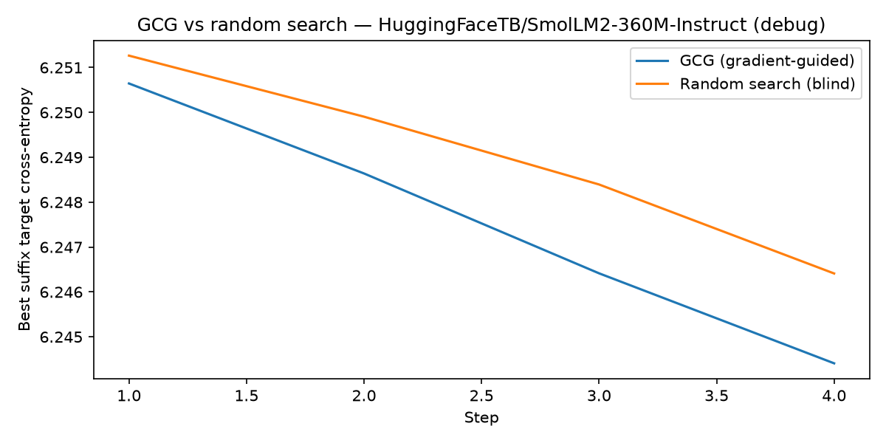
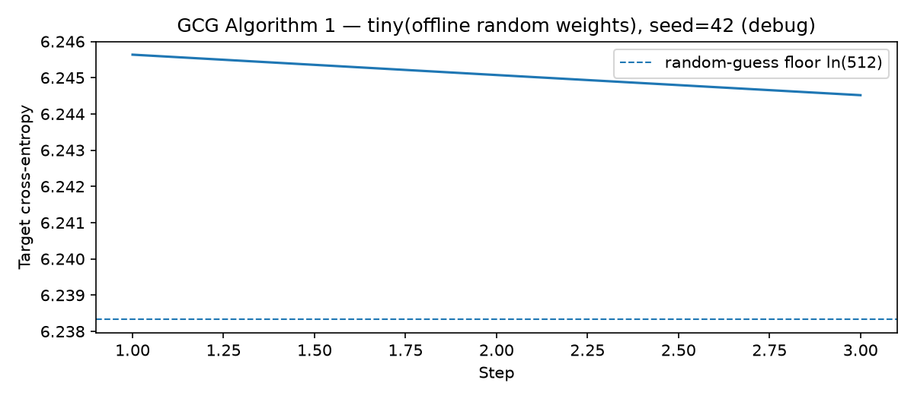
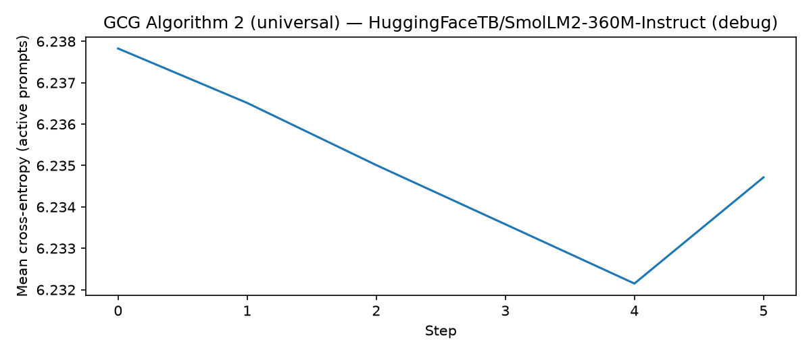
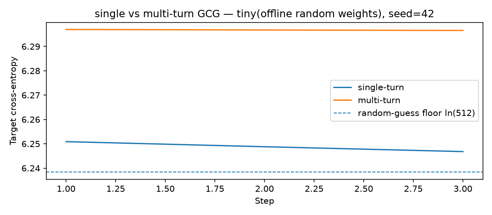
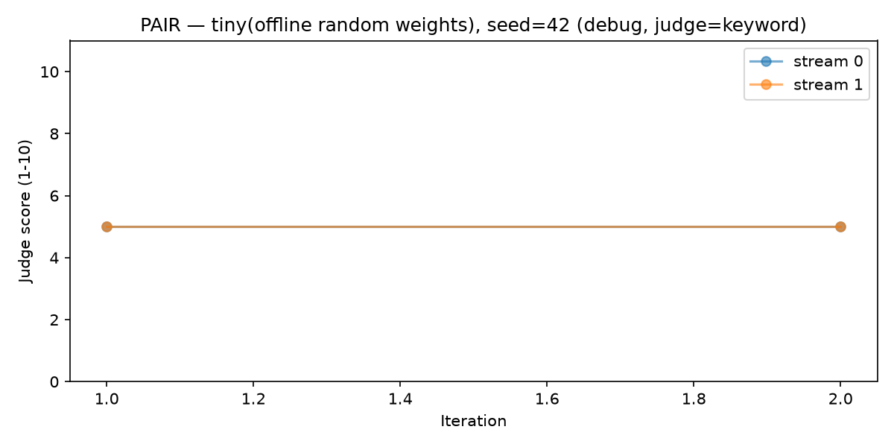
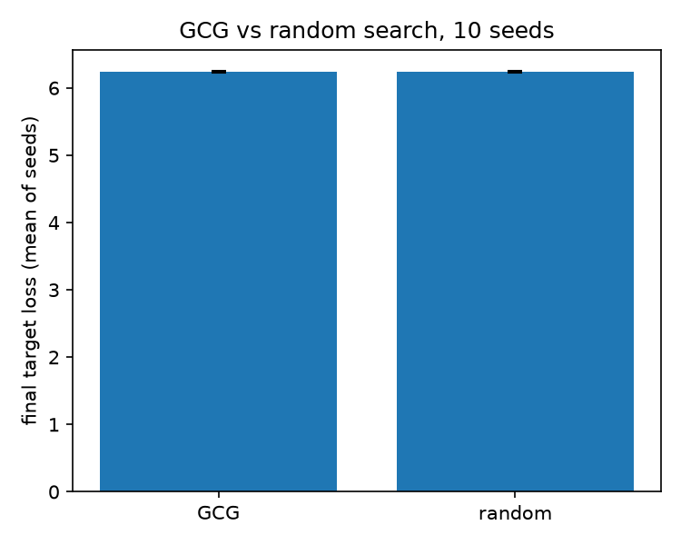
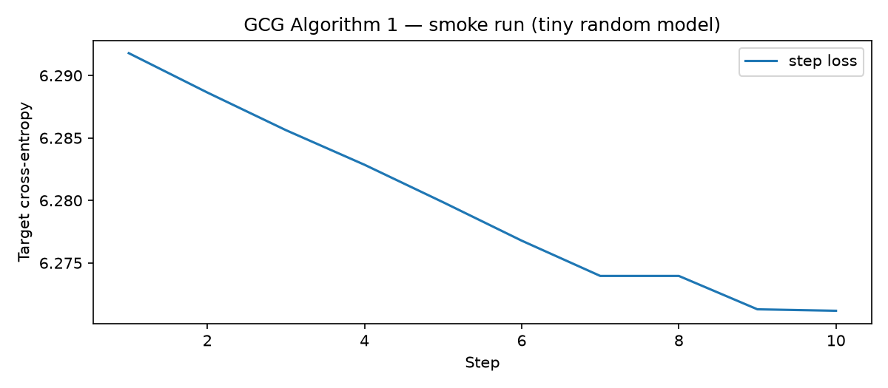
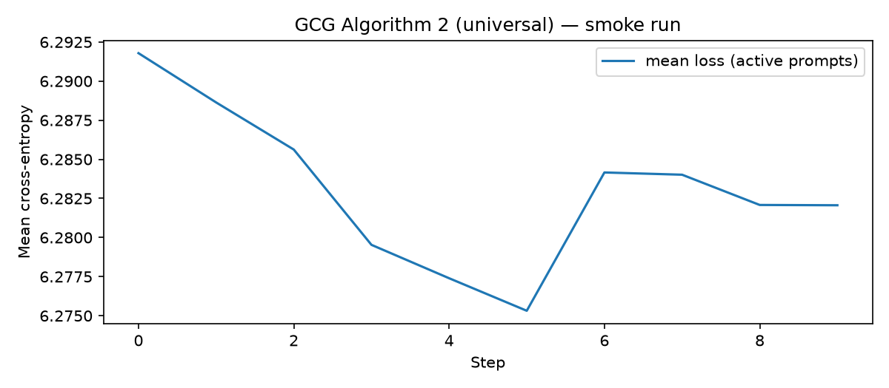

A from-scratch implementation of GCG and PAIR in PyTorch, with per-run cost accounting. This page is generated from the run records — every number below is read out of a JSON file in the repository.
A rate without an n is not a result, so the prompt count is a
column rather than a footnote, and each run also reports the one number that
actually characterises it — a loss, a held-out ASR, a paired difference, a
perplexity. — means the record does not carry that field. Defence
baselines and seed-variance studies have no ASR because they do not measure one;
the headline column shows what they did measure instead of a fabricated zero.
| Run type | Model actually loaded | ASR | n | headline metric | value | forwards | wall (s) |
|---|---|---|---|---|---|---|---|
| Algorithm 1 — per-prompt GCG | tiny(offline random weights), seed=42 | 0% | 2 | final loss | 6.2445 | 51 | 0.0 |
| Algorithm 2 — universal suffix | tiny(offline random weights), seed=42 | 0% | 2 | held-out ASR | 0% | 119 | 0.1 |
| Cross-model transfer | tiny(offline random weights), seed=42 | 0% | 3 | target loss: initial → transferred | 6.1247 → 6.1251 | 68 | 0.1 |
| Multi-turn vs single-turn | tiny(offline random weights), seed=42 | 0% | 2 | single → multi | 0% → 0% | 102 | 0.1 |
| PAIR — black-box | tiny(offline random weights), seed=42 | 0% | 4 | queries | 4 | 4 | 1.1 |
| GCG vs random search | tiny(offline random weights), seed=42 | — | 3 | paired Δ nats (random − GCG) | +0.00200 | 132 | 0.1 |
| GCG vs random, 10 seeds | tiny(offline, random weights) | — | 10 | mean paired Δ nats | +0.00745 | — | — |
| Perplexity defence baseline | tiny(offline random weights), seed=42 | — | 1 | optimised suffix PPL | 474.6 (threshold 1,531.1) | 51 | 0.0 |
Forward passes is the hardware-independent cost measure: comparable across runs, machines and budgets. Cost per successful attack is deliberately reported as undefined, not zero, when there are no successes — zero would read as "attacks are free", which is the opposite of what a 0% ASR means. On free-tier compute the dollar figure is 0 by definition, so the forward count is the number worth comparing.


ln(vocab) random-guess floor. A loss sitting on that dashed line means the suffix is not biting.





The optimiser does work: across 10 seeds with the same mutation budget, gradient-guided GCG beat gradient-blind random search 10/10 times, mean paired improvement +0.0075 nats, 95% CI ≈ [+0.0060, +0.0090] — which is 0.12% of the loss value. That is evidence the implementation is correct. It is not evidence of a jailbreak, and it is reported at this size rather than rounded up to "GCG wins" precisely because the distinction is the whole point.
The real-model runs need a GPU. They run on free Kaggle quota (2×T4, 30 GPU-hours/week) at 1–3B model sizes; 7–8B fits in 4-bit but needs 25–50 h per model for a 25-prompt table, which does not fit an unfunded project's quota. The runbook and the exact commands are in the repository.
python -m experiments.run_smoke # 7/7 checks, seconds, no GPU
python -m unittest discover -s tests # 35 tests
python -m experiments.run_algorithm2 --preset paper --benchmark \
--model Qwen/Qwen2.5-1.5B-Instruct --load-in-4bit \
--steps 500 --num-prompts 25 --held-out 5